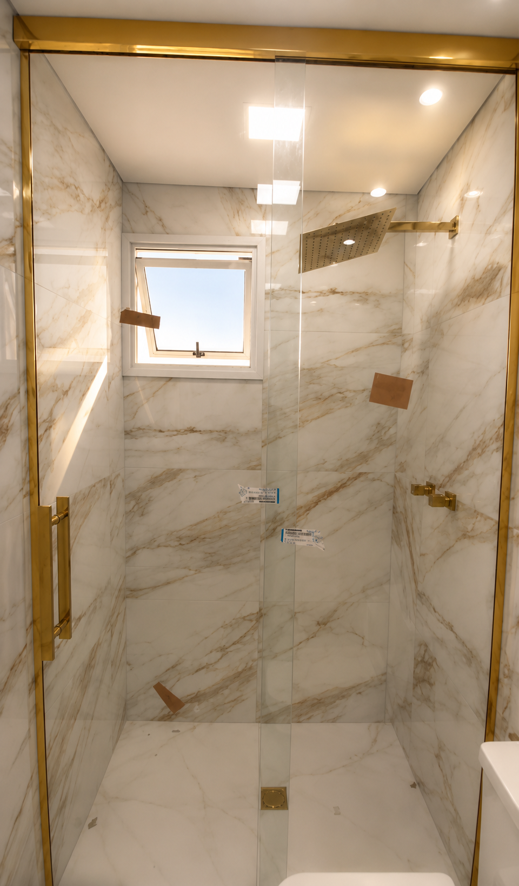
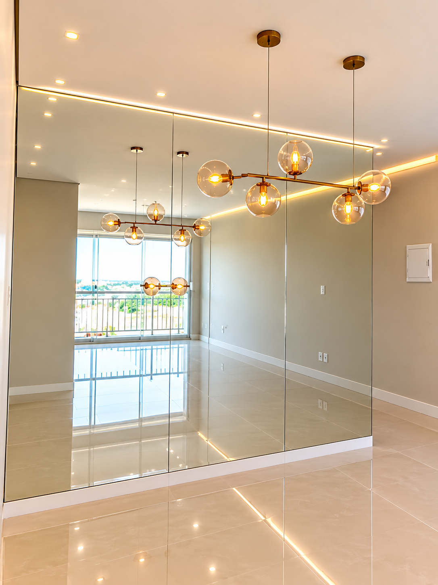

Esquadrias de Aluminio
Portas, janelas e sistemas de aluminio fabricados sob medida.
Solicitar orcamentoEsquadrias de Aluminio e Vidros
Fabricamos esquadrias de aluminio, coberturas, guarda-corpos, boxes e solucoes em vidro sob medida para residencias e empresas, entregando acabamento impecavel, seguranca e durabilidade.
Fabricamos e instalamos produtos sob medida para residencias, empresas e empreendimentos, garantindo qualidade, seguranca e acabamento de alto padrao.
Portas, janelas e sistemas de aluminio fabricados sob medida.
Solicitar orcamento




Espelhos personalizados para ambientes residenciais e comerciais.
Solicitar orcamentoTrabalhamos com qualidade, seguranca e acabamento impecavel em cada projeto, oferecendo solucoes sob medida para residencias, empresas e condominios.
Trabalhamos apenas com materiais certificados e de alta durabilidade.
Cada projeto e desenvolvido conforme as necessidades do cliente.
Equipe treinada para garantir precisao e acabamento impecavel.
Atendimento rapido, orcamento transparente e acompanhamento em todas as etapas.
Produtos seguros, instalacao correta e garantia de qualidade.
Compromisso com excelencia e entrega de ambientes modernos e sofisticados.
Ha mais de 15 anos entregando solucoes em vidros, esquadrias de aluminio e coberturas com excelencia, inovacao e acabamento impecavel para residencias, empresas e condominios.
Mais de uma decada oferecendo solucoes em vidros e esquadrias com qualidade, seguranca e acabamento impecavel.
Mais de mil obras concluidas em residencias, empresas e condominios, sempre com alto padrao de qualidade.
Centenas de clientes confiaram na Qualy Tech para transformar seus projetos com atendimento personalizado e excelencia.
Presenca em Suzano, Mogi das Cruzes, Poa, Ferraz de Vasconcelos, Itaquaquecetuba e diversas cidades do Alto Tiete e Grande Sao Paulo.
Ha mais de 15 anos, a Qualy Tech atua no mercado oferecendo solucoes completas em vidros e esquadrias de aluminio, unindo tecnologia, seguranca, sofisticacao e acabamento impecavel.
Atendemos projetos residenciais, comerciais e corporativos, sempre desenvolvendo cada servico sob medida para garantir durabilidade, funcionalidade e valorizacao do seu patrimonio.
A satisfacao dos nossos clientes e o reflexo da qualidade, dedicacao e compromisso presentes em cada projeto realizado.
Solicite um orcamento sem compromisso e receba um atendimento personalizado para transformar seu ambiente com vidros e esquadrias de alto padrao.